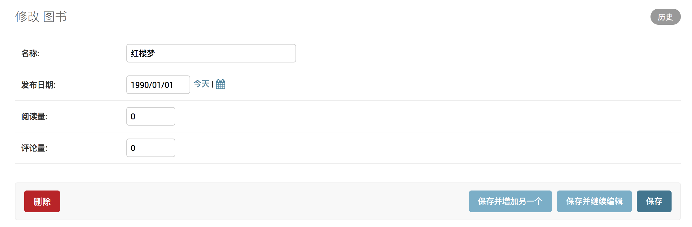
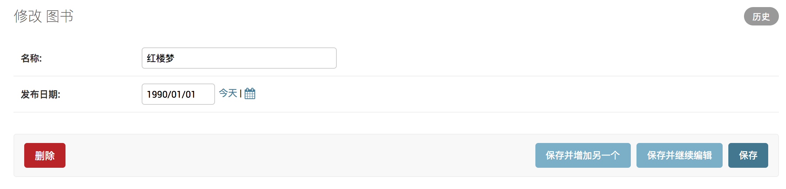
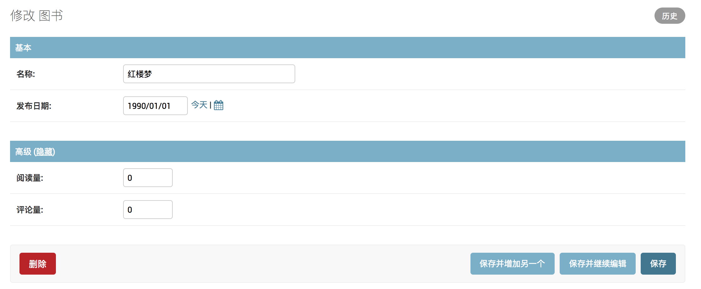
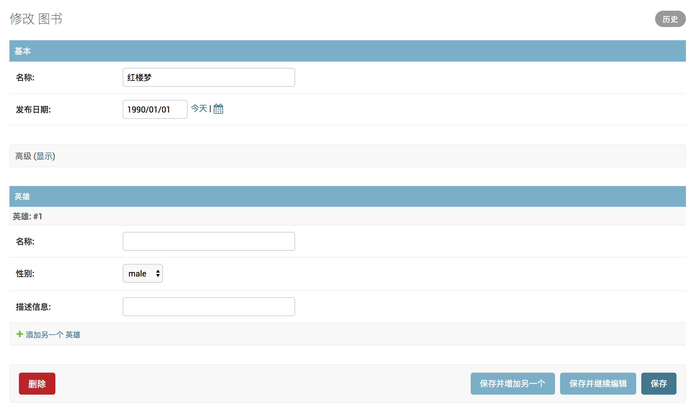
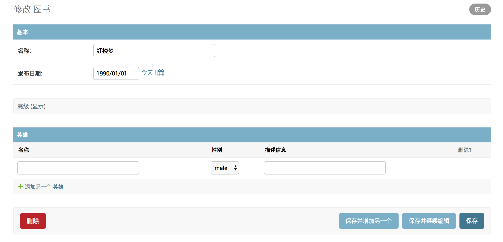

调整编辑页展示
1. 显示字段
属性如下：
fields=[]
1）点击某行ID的链接，可以转到修改页面，默认效果如下图：

2）打开booktest/admin.py文件，修改BookInfoAdmin类如下：
class BookInfoAdmin(admin.ModelAdmin):
...
fields = ['btitle', 'bpub_date']
3）刷新浏览器效果如下图：

2. 分组显示
属性如下：
fieldsets=(
('组1标题',{'fields':('字段1','字段2')}),
('组2标题',{'fields':('字段3','字段4')}),
)
1）打开booktest/admin.py文件，修改BookInfoAdmin类如下：
class BookInfoAdmin(admin.ModelAdmin):
...
# fields = ['btitle', 'bpub_date']
fieldsets = (
('基本', {'fields': ['btitle', 'bpub_date']}),
('高级', {
'fields': ['bread', 'bcomment'],
'classes': ('collapse',) # 是否折叠显示
})
)
2）刷新浏览器效果如下图：

说明：fields与fieldsets两者选一使用。
3. 关联对象
在一对多的关系中，可以在一端的编辑页面中编辑多端的对象，嵌入多端对象的方式包括表格、块两种。
- 类型InlineModelAdmin：表示在模型的编辑页面嵌入关联模型的编辑。
- 子类TabularInline：以表格的形式嵌入。
- 子类StackedInline：以块的形式嵌入。
1）打开booktest/admin.py文件，创建HeroInfoStackInline类。
class HeroInfoStackInline(admin.StackedInline):
model = HeroInfo # 要编辑的对象
extra = 1 # 附加编辑的数量
2）打开booktest/admin.py文件，修改BookInfoAdmin类如下：
class BookInfoAdmin(admin.ModelAdmin):
...
inlines = [HeroInfoStackInline]
3）刷新浏览器效果如下图：

可以用表格的形式嵌入。
1）打开booktest/admin.py文件，创建HeroInfoTabularInline类。
class HeroInfoTabularInline(admin.TabularInline):
model = HeroInfo
extra = 1
2）打开booktest/admin.py文件，修改BookInfoAdmin类如下：
class BookInfoAdmin(admin.ModelAdmin):
...
inlines = [HeroInfoTabularInline]
3）刷新浏览器效果如下图：
